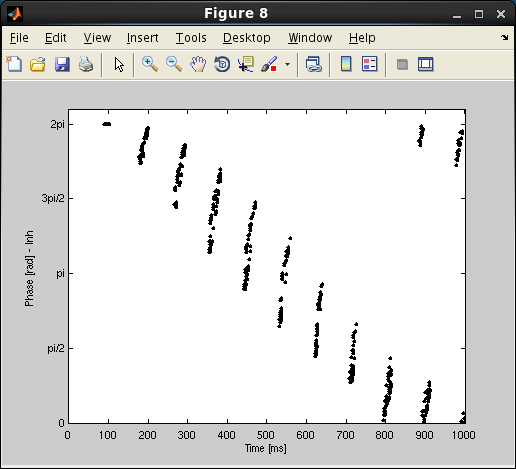

Code to produce main figures in: "Phase precession through acceleration of local theta rhythm: a biophysical model for the interaction between place cells and local inhibitory neurons", JOURNAL OF COMPUTATIONAL NEUROSCIENCE. doi: http://dx.doi.org/10.1007/s10827-011-0378-0 **************************************** * * * Run 'Model_Precession.m' in MATLAB * * * **************************************** Core model parameters are set in Setup_Parameters Authors: -------- Luisa Castro and Paulo Aguiar Faculdade de Ciencias da Universidade do Porto contact email: pauloaguiar@fc.up.pt After Model_Precession is run (takes under a minute) at the matlab command line the main figures from the paper appear, e.g.: Figure 3a Figure 3b, c Figure 3d Figure 4a Figure 4b Figure 4c Figure 5a  Figure 5b Figure 5c Figure 5d Figure 6